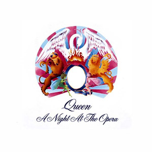
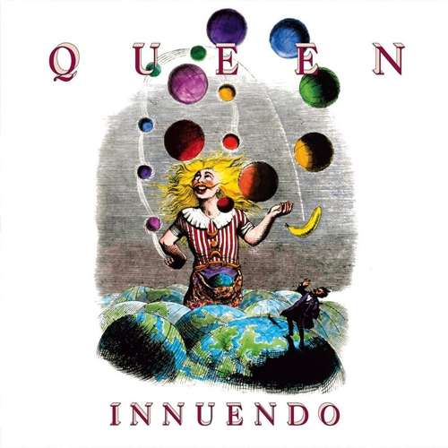

Queen: Biografia e Principais Álbuns
O Queen é uma das bandas de rock mais icônicas e inovadoras da história, conhecida por sua mistura única de estilos, performances teatrais e habilidade musical. Fundada em Londres, em 1970, a banda era composta pelo vocalista Freddie Mercury, o guitarrista Brian May, o baterista Roger Taylor e o baixista John Deacon. Com influências que vão do rock progressivo ao glam, passando pela ópera e pop, o Queen quebrou barreiras e criou um legado que ressoa até hoje.
Formação e Início
Brian May e Roger Taylor se conheceram na banda Smile, onde tocaram antes de conhecer Freddie Mercury, que sugeriu o nome "Queen" e trouxe uma visão artística ousada para o grupo. John Deacon entrou logo depois, completando a formação. Em 1973, lançaram seu álbum de estreia autointitulado, com faixas que já mostravam seu potencial criativo.
Ascensão ao Sucesso
O sucesso veio com o terceiro álbum, Sheer Heart Attack (1974), e atingiu novos patamares com A Night at the Opera (1975), que trouxe a icônica "Bohemian Rhapsody". Este álbum marcou a consolidação do Queen como pioneiro no uso de estúdio como ferramenta criativa, misturando rock com harmonias complexas e arranjos teatrais.
Legado
Após a morte de Freddie Mercury em 1991, o Queen continuou a impactar gerações. A banda entrou no Rock and Roll Hall of Fame em 2001 e manteve relevância com colaborações, como o projeto com Adam Lambert. Filmes como Bohemian Rhapsody (2018) celebraram o legado do Queen, reintroduzindo sua música para novas audiências. O Queen não é apenas uma banda, mas uma experiência, um fenômeno cultural que transcendeu o tempo. Seus álbuns, letras e apresentações ao vivo continuam a inspirar fãs em todo o mundo, consolidando-os como um dos maiores nomes da história do rock.

Principais Álbuns
"A Night at the Opera " (1975)
Contendo a épica "Bohemian Rhapsody", este álbum explorou temas variados, de baladas ao rock progressivo. Foi um marco na música, com produção elaborada e experimental.
"News of the World " (1977)
Marcado por hinos como "We Will Rock You" e "We Are the Champions", este disco se tornou indispensável em estádios e celebrações ao redor do mundo.
"The Game" (1980)

Mostrando a versatilidade da banda, trouxe influências do pop e funk com hits como "Another One Bites the Dust" e "Crazy Little Thing Called Love".
"Innuendo" (1991)
Último álbum lançado antes da morte de Freddie Mercury, é um trabalho profundo e emocional, com faixas como "The Show Must Go On" refletindo a luta do vocalista contra a AIDS.